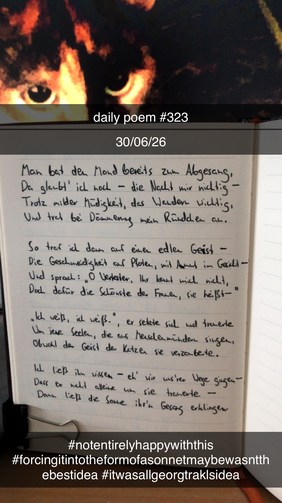

Ein unverhofftes Treffen
[323]Man bat den Mond bereits zum Abgesang,
Da glaubt' ich noch – die Nacht mir nichtig –
Trotz milder Müdigkeit, das Wandern wichtig,
Und trat bei Dämmerung mein Ründchen an.
So traf ich dann auf einen edlen Geist –
Die Geschmeidigkeit auf Pfoten, mit Anmut im Gesicht –
Und sprach: "O Wertester, Ihr kennt mich nicht,
Doch dafür die Schönste der Frauen, sie heißt–"
"Ich weiß, ich weiß", er setzte sich und trauerte
Um jene Seelen, die aus Menschenmündern singen,
Obwohl der Geist der Katzen sie verzauberte.
Ich ließ ihn wissen – eh' wir uns'rer Wege gingen –
Dass er nicht alleine um sie trauerte.
Dann ließ die Sonne ihr'n Gesang erklingen.
